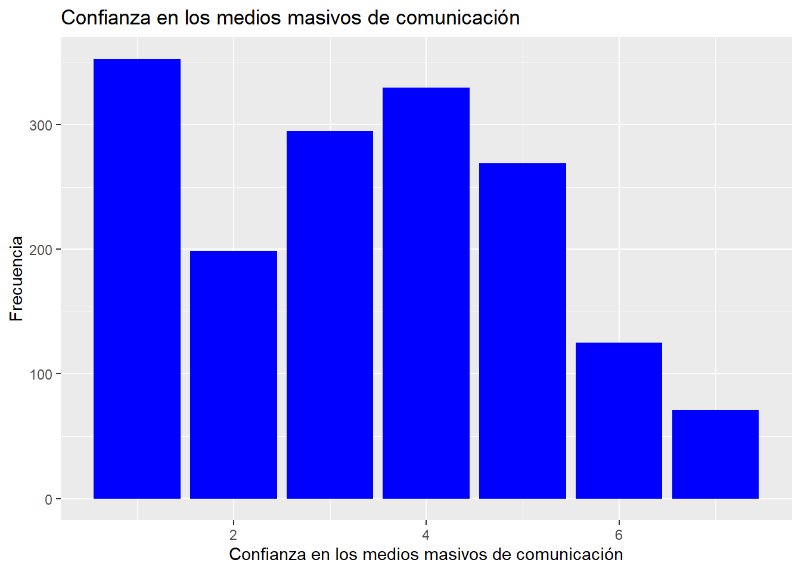
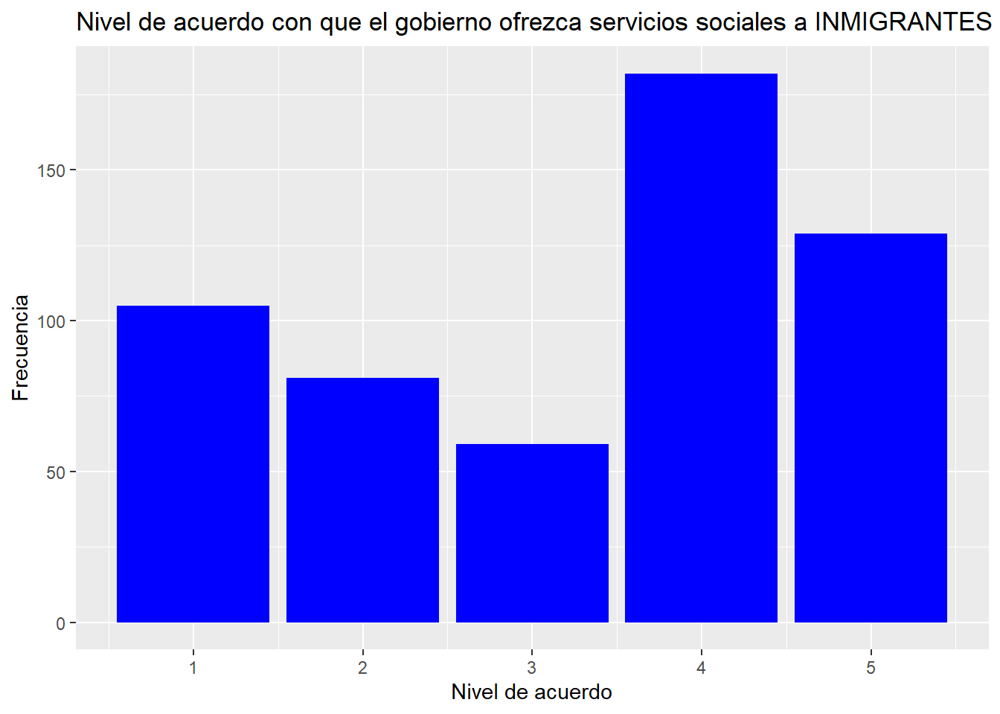

pacman::p_load(dplyr, sjmisc, car, sjlabelled, stargazer, haven, kableExtra, summarytools, ggplot2)
load("ipo/input/data-proc/variables_operacionalizadas.RData")Medios Masivos de Comunicación y su Influencia en la Percepción de los Chilenos sobre la Ingmiración
Por: Jacob Reyes A.
Introducción
En Chile el fenómeno de inmigración no es algo nuevo, ocurre desde hace más de un siglo, sin embargo nunca con un flujo tan intenso como el de los últimos años. Las estadísticas del Instituto Nacional de Estadísticas (INE) en conjunto con el Servicio Nacional de Migraciones (SERMIG) estimaron que para el año 2022 había un total de 1,625,074 personas extranjeras residiendo en Chile (INE 2022). Según estas estadísticas migratorias los colectivos principales de la población extranjera son de Venezuela (32.8%), Perú (15.4%) y Colombia (11.7%) seguidos por Haití (11.4%), Bolivia (9.1%) y Argentina (4.9%).
El 2019 la Alianza Comunicación y Pobreza realizó el seminario Migración y Opinión Pública. En él el académico Roberto Méndez presentó datos relacionados a la opinión pública sobre la migración los cuales demuestran que Chile es el país con la percepción más severa sobre los migrantes, en síntesis los chilenos consideran esta ola de inmigración como una amenaza a la identidad nacional, al empleo, seguridad y al acceso de los servicios entregados por el Estado (ver Fundación Superación de la Pobreza 2019; también Escuela de Gobierno 2019).
¿Cómo tratan este tema los medios de comunicación en el país? Primero, es relevante señalar que los medios tienen efectos significativos en la sociedad, si bien el nivel de influencia que tienen sobre la ciudadanía puede variar con el tiempo, investigaciones han demostrado que es en los tiempos de crisis donde éstos demuestran ser mucho más influyentes (Rubio 2009). En el país los medios de comunicación (diarios, televisión, radio, etc.) abordan la migración desde distintos puntos de vista, no obstante, en su mayoría lo hacen considerando al migrante como un “otro”, un forastero que viene a invadir, transformar la sociedad a la que llegan, creando así una mala representación de los migrantes. (Rizik 2019).
Además de esta negativa representación que hacen los medios de comunicación sobre los migrantes, existe evidencia de que los periodos con mayor actividad de menciones discriminatorias en redes sociales se relacionan con eventos noticiosos sobre la población extranjera (Gálvez et al. 2020).
Considerando lo anteriormente expuesto es que en el presente trabajo se pretende investigar como la percepción de los chilenos sobre la inmigración es influenciada por la confianza que estos tienen en los medios de comunicación, con la hipótesis: A mayor confianza en los medios de comunicación, la percepción negativa de los chilenos sobre los inmigrantes aumenta. Para llevar a cabo este estudio se utilizarán los datos de la encuesta LAPOP aplicada el año 2023 en el territorio nacional.
Análisis descriptivo
A continuación se presentará un breve análisis descriptivo. Como se mencionó en la introducción los datos utilizados fueron los generados por la encuesta LAPOP que se aplicó el año 2023 en Chile. Se escogieron siete variables para el presente análisis: Confianza en los medios de comunicación, las otras seis se pueden dividir en dos grupos, por un lado: nivel de acuerdo con que el estado ofrezca servicios sociales (asistencia de salud, educación, vivienda, etc.) a venezolanos, españoles e inmigrantes y por otro lado: nivel de molestia de tener un vecino venezolano, español o inmigrante.
Ahora se cargará los paquetes a utilizar y la base de datos con las variables ya operacionalizadas.
En la siguiente tabla descriptiva se pueden apreciar las medidas de tendencia central de las variables escogidas para analizar. En cuanto a la variable de confianza en los medios de comunicación (sus categoría de respuesta iba de 1 a 7, siendo 1 nada de confianza y 7 mucha confianza) se puede observar que en promedio existe una desconfianza de los chilenos hacia estos, cabe señalar que solo un 4.3% de la muestra señaló confiar mucho en los medios de comunicación. En cuanto al grupo de variables del nivel de acuerdo con que el gobierno ofrezca servicios sociales (sus categorías de respuesta van de 1 a 5, siendo 1 muy en desacuerdo y 5 muy de acuerdo) a los extranjeros que vienen a residir al país existen promedios parecidos para los tres casos: Venezolanos (presenta un promedio de 3) españoles (2.9) e inmigrantes (3.3) considerando las categorías de respuesta se puede decir existe indiferencia (ni de acuerdo ni en acuerdo) por parte de los ciudadanos con respecto a este tópico, sin embargo es relevante señalar que la moda en las tres variables es la categoría de respuesta 4 (algo de acuerdo) y la segunda categoría de respuesta con más frecuencia es la 1 (muy en desacuerdo). En cuanto al grupo de variable de respuesta del nivel de molestia (sus categorías de respuesta iban de 0 a 4, siendo 0 ninguna molestia y 3 mucha molestia), en la tabla se puede apreciar que en los tres casos en promedio para los chilenos no sería molesto tener un vecino venezolano (0.8), español (0.8) o inmigrante (0.5). También se puede observar que para estas últimas seis variables existe un gran numero de casos perdidos, esto es porque estas preguntas se le aplicaron solo a un tercio de la muestra. En síntesis, observando esta tabla se puede decir que los chilenos presentan una baja confianza con sus medios masivos de comunicación, y presentan una “buena” (las comillas son porque no creo que se pueda definir esto solo con estas variables) percepción sobre la población extranjera del país independiente de su país de origen.
summarytools::dfSummary(proc_data, plain.ascii = FALSE)### Data Frame Summary
#### proc_data
**Dimensions:** 1653 x 7
**Duplicates:** 1369
---------------------------------------------------------------------------------------------------------------------------------------------------------------------------
No Variable Label Stats / Values Freqs (% of Valid) Graph Valid Missing
---- -------------------------------------- ------------------------------------------ ------------------------ -------------------- ------------------ --------- ---------
1 conf_mcm\ Confianza: Medios de Comunicación Mean (sd) : 3.4 (1.8)\ 1 : 353 (21.5%)\ IIII \ 1642\ 11\
[haven_labelled, vctrs_vctr, double] min < med < max:\ 2 : 199 (12.1%)\ II \ (99.3%) (0.7%)
1 < 3 < 7\ 3 : 295 (18.0%)\ III \
IQR (CV) : 3 (0.5) 4 : 330 (20.1%)\ IIII \
5 : 269 (16.4%)\ III \
6 : 125 ( 7.6%)\ I \
7 : 71 ( 4.3%)
2 s_sociales_ven\ Nivel de acuerdo con que el gobierno Mean (sd) : 3 (1.4)\ 1 : 125 (24.1%)\ IIII \ 519\ 1134\
[haven_labelled, vctrs_vctr, double] ofrezca servicios sociales a Venezolanos min < med < max:\ 2 : 85 (16.4%)\ III \ (31.4%) (68.6%)
1 < 3 < 5\ 3 : 79 (15.2%)\ III \
IQR (CV) : 2 (0.5) 4 : 142 (27.4%)\ IIIII \
5 : 88 (17.0%) III
3 s_sociales_inmg\ Nivel de acuerdo con que el gobierno Mean (sd) : 3.3 (1.4)\ 1 : 105 (18.9%)\ III \ 556\ 1097\
[haven_labelled, vctrs_vctr, double] ofrezca servicios sociales a min < med < max:\ 2 : 81 (14.6%)\ II \ (33.6%) (66.4%)
Imnmigrantes 1 < 4 < 5\ 3 : 59 (10.6%)\ II \
IQR (CV) : 2 (0.4) 4 : 182 (32.7%)\ IIIIII \
5 : 129 (23.2%) IIII
4 s_sociales_esp\ Nivel de acuerdo con que el gobierno Mean (sd) : 2.9 (1.4)\ 1 : 137 (24.6%)\ IIII \ 557\ 1096\
[haven_labelled, vctrs_vctr, double] ofrezca servicios sociales a Españoles min < med < max:\ 2 : 92 (16.5%)\ III \ (33.7%) (66.3%)
1 < 3 < 5\ 3 : 96 (17.2%)\ III \
IQR (CV) : 2 (0.5) 4 : 142 (25.5%)\ IIIII \
5 : 90 (16.2%) III
5 vecino_ven\ Nivel de molestia: Tener un vecino Mean (sd) : 0.8 (1.1)\ 0 : 320 (62.7%)\ IIIIIIIIIIII \ 510\ 1143\
[haven_labelled, vctrs_vctr, double] venezolano min < med < max:\ 1 : 55 (10.8%)\ II \ (30.9%) (69.1%)
0 < 0 < 3\ 2 : 71 (13.9%)\ II \
IQR (CV) : 2 (1.4) 3 : 64 (12.5%) II
6 vecino_inmg\ Nivel de molestia: Tener un vecino Mean (sd) : 0.5 (0.9)\ 0 : 382 (69.6%)\ IIIIIIIIIIIII \ 549\ 1104\
[haven_labelled, vctrs_vctr, double] inmigrante min < med < max:\ 1 : 70 (12.8%)\ II \ (33.2%) (66.8%)
0 < 0 < 3\ 2 : 62 (11.3%)\ II \
IQR (CV) : 1 (1.7) 3 : 35 ( 6.4%) I
7 vecino_esp\ Nivel de molestia: Tener un vecino Mean (sd) : 0.8 (1.1)\ 0 : 320 (62.7%)\ IIIIIIIIIIII \ 510\ 1143\
[haven_labelled, vctrs_vctr, double] español min < med < max:\ 1 : 55 (10.8%)\ II \ (30.9%) (69.1%)
0 < 0 < 3\ 2 : 71 (13.9%)\ II \
IQR (CV) : 2 (1.4) 3 : 64 (12.5%) II
---------------------------------------------------------------------------------------------------------------------------------------------------------------------------view(dfSummary(proc_data, headings=FALSE))Switching method to 'browser'Output file written: C:\Users\Jacob\AppData\Local\Temp\Rtmpw37nBX\file4bc58e13ba3.htmlsiguiendo la visualización de datos ahora se presentarán en gráficos univariados dos variables principales de la investigación.
En la Figure 1 se puede observar la variable “Confianza en los medios de comunicación” graficada. En este gráfico se puede apreciar que la barra más alta es la primera (o sea la del valor de categoría de respuesta 1) es decir que los chilenos en su mayoría no confían en los medios masivos de comunicaciónd el país.
ggplot(data = proc_data, aes(conf_mcm)) +
geom_bar(fill="blue")+
labs(title = "Confianza en los medios masivos de comunicación",
x = "Confianza en los medios masivos de comunicación",
y = "Frecuencia")Warning: Removed 11 rows containing non-finite outside the scale range
(`stat_count()`).
A continuación se presenta la Figure 2, esta corresponde a la variable “Nivel de acuerdo con que el gobierno ofrezca servicios sociales a inmigrantes”. En este gráfico, considerando las categorías de respuesta de esta variable (1 Muy en desacuerdo a 5 Muy de acuerdo) se puede observar que la categoría con más frecuencia es la número 4 (Algo de acuerdo). Seguido por la categoría muy de acuerdo y la tercera categoría con más observaciones es la número 1 (Muy en desacuerdo). En síntesis, con este gráfico se puede apreciar que existe mayor acuerdo a que el gobierno ofrezca servicios sociales a los inmigrantes habitantes del país.
ggplot(data = proc_data, aes(s_sociales_inmg)) +
geom_bar(fill="blue")+
labs(title = "Nivel de acuerdo con que el gobierno ofrezca servicios sociales a INMIGRANTES",
x = "Nivel de acuerdo",
y = "Frecuencia")Warning: Removed 1097 rows containing non-finite outside the scale range
(`stat_count()`).
References
Escuela de Gobierno. 2019. “Méndez Entregó Indicadores Que Muestran a Chile Como Un País Con Percepción Negativa Frente a La Migración.” https://gobierno.uc.cl/noticias/mendez-entrego-indicadores-que-muestran-a-chile-como-un-pais-con-percepcion-negativa-frente-a-la-migracion/.
Fundación Superación de la Pobreza. 2019. “Los Chilenos Son Los Más Duros de América En Su Percepción Sobre Los Migrantes.” https://www.superacionpobreza.cl/los-chilenos-son-los-mas-duros-de-america-en-su-percepcion-sobre-los-migrantes/.
Gálvez, Diego, Patricio Durán, Tomás Lawrence, and Nicolás Rojas. 2020. “BARÓMETRO DE PERCEPCIÓN DE LA MIGRACIÓN 2018-2020: ACTIVIDAD EN REDES SOCIALES Y SU CONTEXTO.”
INE. 2022. “Estimación de Personas Extranjeras: Residentes Habituales En Chile Al 31 de Diciembre de 2022.” December. https://serviciomigraciones.cl/estudios-migratorios/estimaciones-de-extranjeros/.
Rizik, Jorge. 2019. “LA MIGRACIÓN EN LOS MEDIOS DE COMUNICACIÓN.”
Rubio, José María. 2009. “Opinión pública y Medios de Comunicación. Teoría de La ’Agenda Setting’.” Gazeta de Antropología, February. https://doi.org/10.30827/Digibug.6843.